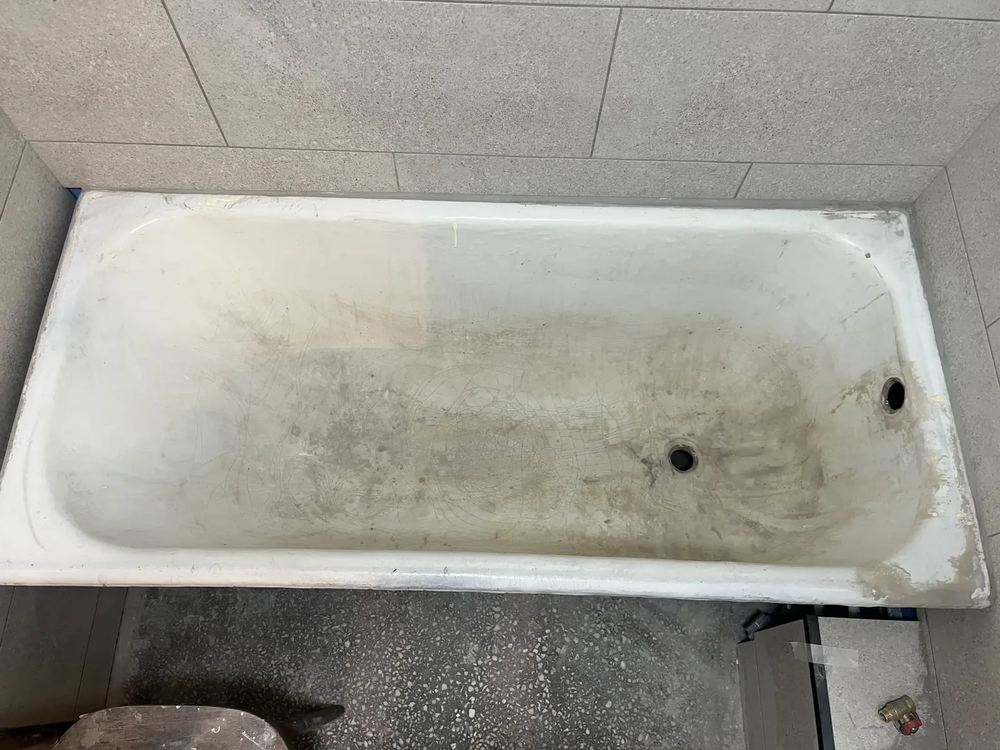
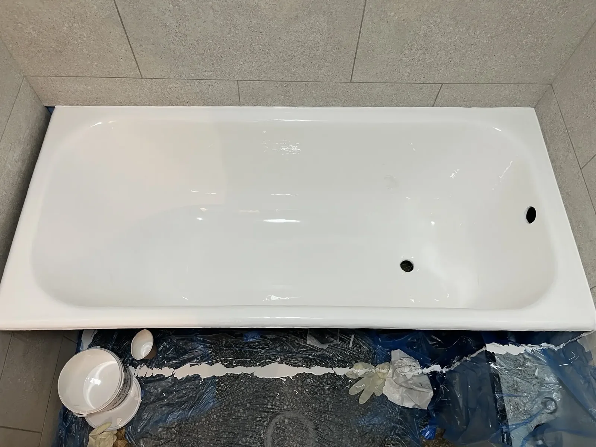
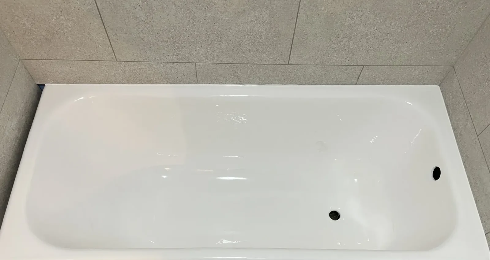
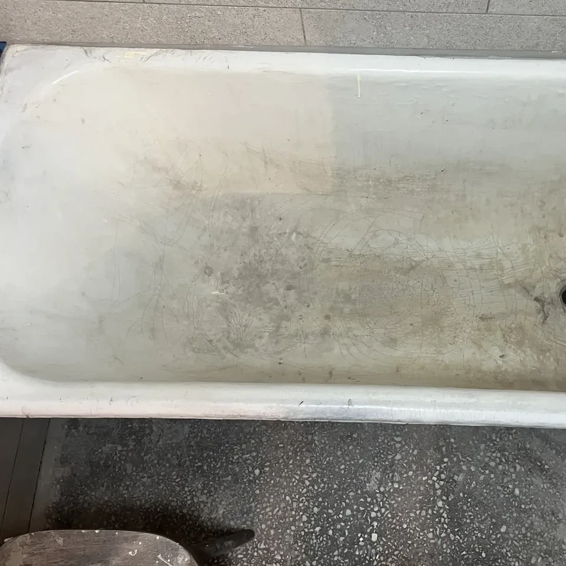
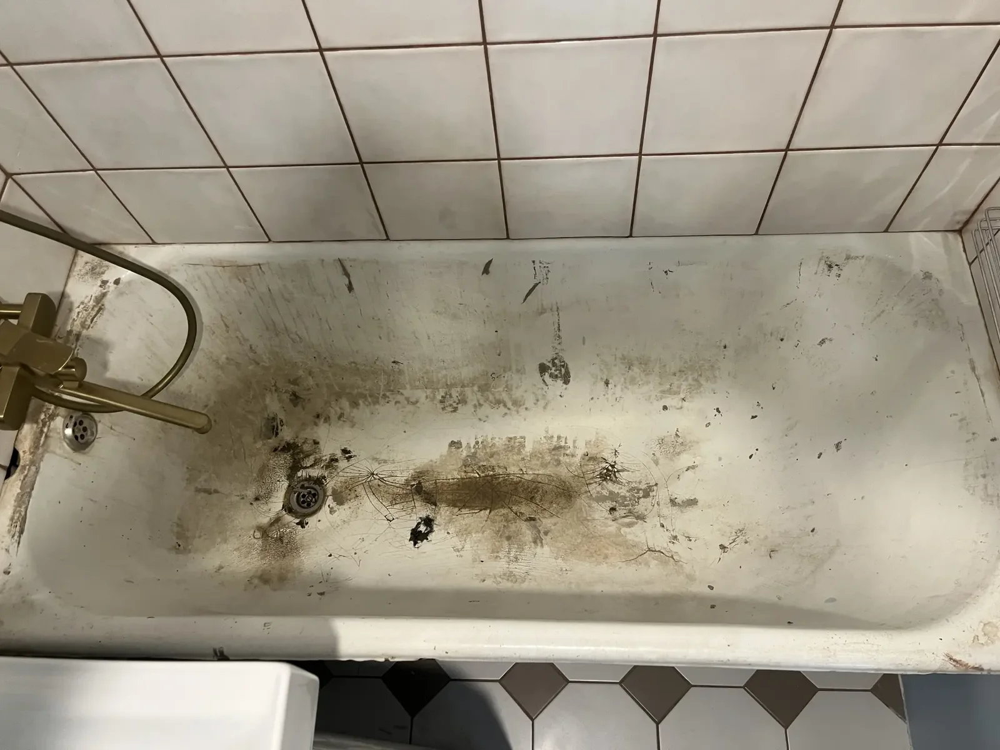
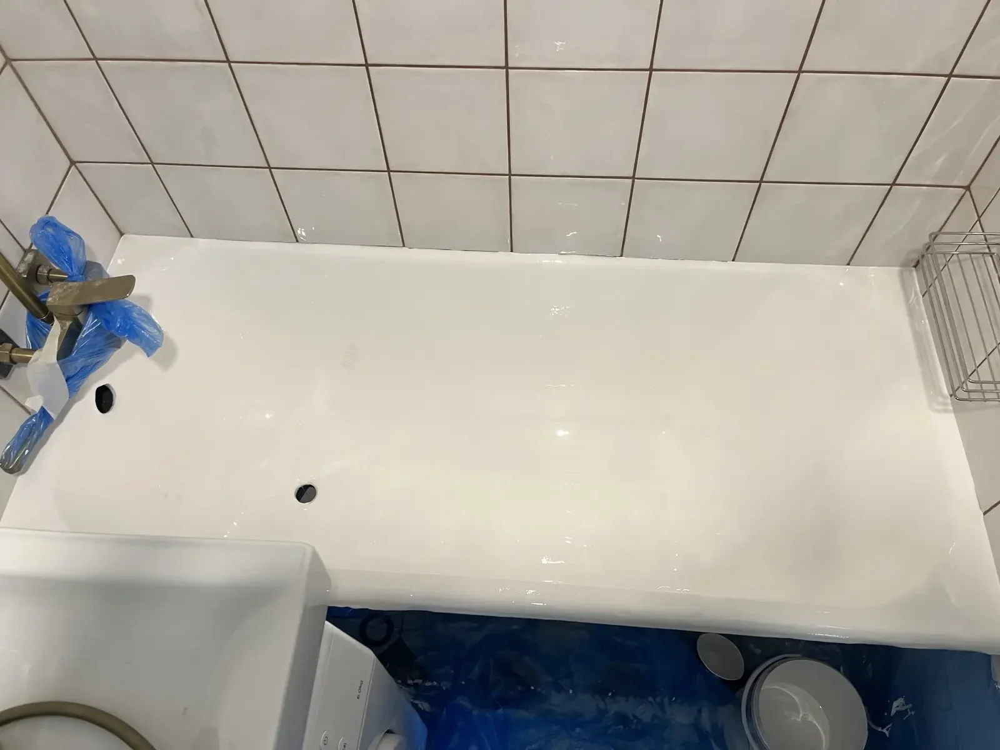
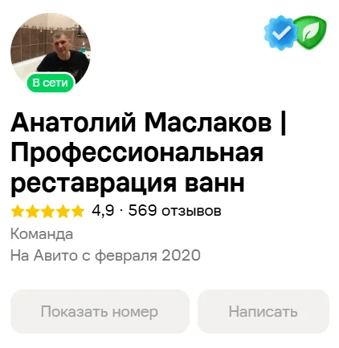

↔
ДоПосле
Глубокий износ поверхностиполное восстановление покрытия
Анатолий Маслаков и команда профессионально обученных мастеров восстанавливают чугунные и стальные ванны жидким акрилом и мраморным составом. Премиальные материалы, договор и гарантия.


Анатолий работает сам и вместе с мастерами, прошедшими профессиональное обучение. Используем единые стандарты подготовки поверхности и нанесения покрытия.
Используем реальные фотографии работ. Передвигайте разделитель и сравнивайте состояние поверхности до и после реставрации.




Выберите материал под задачу и бюджет. Точную стоимость мастер подтверждает до начала работ.
Практичное обновление ванны с гладким белым покрытием.
Более плотное премиальное покрытие с выразительным глянцем.
Максимальный вариант для тех, кто выбирает покрытие классом выше.

Анатолий Маслаков работает сам и вместе с командой мастеров, которые прошли профессиональное обучение по реставрации ванн.
Анатолий и мастера команды работают с жидким акрилом и мраморными составами премиум-класса. Все мастера проходят профессиональное обучение. На выполненные работы предоставляются договор и гарантия.
Не прячем репутацию за красивым сайтом. Профиль на Авито открыт — можно посмотреть отзывы и историю работы команды перед заказом.
Смотреть отзывы на АвитоЧетыре понятных шага от первого звонка до готовой ванны.
Созваниваемся, смотрим фото ванны и подбираем подходящее покрытие.
Подготавливаем старую поверхность к нанесению нового материала.
Наносим покрытие. Основная работа занимает около 2–3 часов.
Фиксируем выполненную работу и гарантийные условия в договоре.
Если вы ищете реставрацию ванн в Новосибирске, восстановление старой ванны, жидкий акрил, наливную ванну или реставрацию ванны мрамором, вы по адресу. Анатолий Маслаков и команда профессионально обученных мастеров выполняют обновление покрытия ванн аккуратно, с договором и гарантией.
Работаем по Новосибирску. Помогаем восстановить старые чугунные и стальные ванны, вернуть белый цвет, ровную глянцевую поверхность и аккуратный внешний вид без замены ванны.
Свяжитесь с нами по телефону или через Авито. Для предварительной оценки можно отправить фотографию ванны.